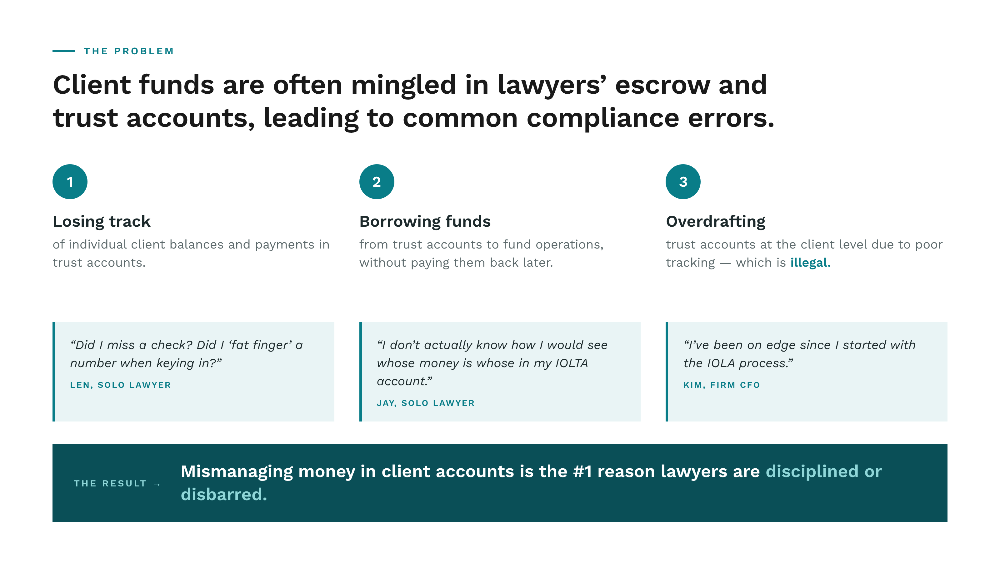
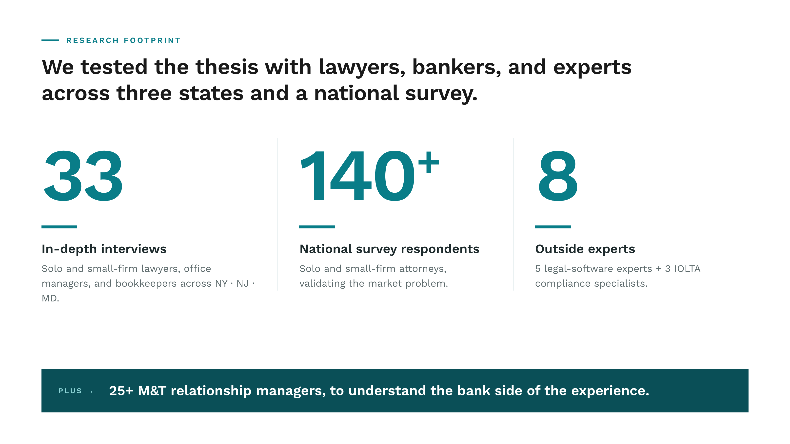
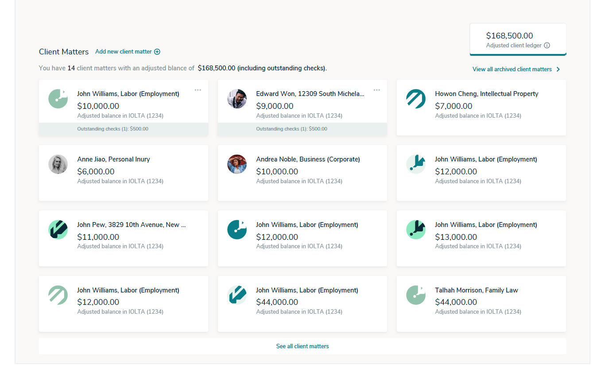

A digital bank for lawyers, built around compliance.
Mismanaging a client trust account is the #1 reason lawyers are disciplined or disbarred. Nota solves that anxiety with a product — and a new line of business for M&T Bank.
Jump to results ↓M&T Bank was looking to create a differentiated business-banking product by starting with a high-value segment, but they weren’t sure where to start.
After speaking with hundreds of small businesses, we identified lawyers as a fast-growing segment with a real pain point to be solved: trust account management.

The thesis was specific: if we can create a layer on top of a bank account to organize retainer accounts and automate reconciliation, we’ll reduce stress and eliminate the mismanagement of trust accounts for lawyers.
To test this thesis, we ran 33 in-depth interviews with solo and small-firm lawyers, office managers, and bookkeepers, plus 25+ M&T relationship managers. A national survey of 140+ lawyers, and consultations with five legal experts plus 3 IOLTA specialists helped us co-create our feature set.
After building and refining our POC and MVP, we launched an alpha that quickly gained traction — ultimately resulting in a full build and handover to a brand new M&T team.

- Developed research plan to test our functional POC and detailed screens with lawyers; worked with our recruiter to identify the right participants, drafted discussion guides, and co-facilitated interviews
- Synthesized findings and made recommendations based on user research to shape and evolve the product throughout alpha and MVP stages, working closely with our designers and engineers
- Created a service blueprint for Beta execution outlining the back-stage actions required for an ideal user flow
- Trained embedded clients on design thinking and how to run strategic design sprints
Nota is a digital bank for lawyers that makes compliance easy. Attorneys link their existing bank accounts and get smart alerts as money moves in and out of their IOLTA — flagging the moments where a misstep would normally trigger a bar complaint.
Every transaction can be tagged to a client matter, manually or with suggested tags, so the trust ledger and the bank ledger stay in lock-step. Attorneys can see pending outgoing checks at a glance, and Nota automatically produces the reconciliation reports bar associations require — collapsing what used to be a month-end ritual across three systems into a single, audit-ready view.

It can do everything I have been able to do in other software, but I've never been able to do it directly within my banking. This alleviates a lot of duplicative work and mental stress.Keith, Attorney reviewing our POC · Buffalo, NY
Results
Five years post-launchIn deposits across 2,000+ law firms within five years of launch.
Of user-acquisition targets hit — 50 lawyer customers in the first 6 months post-Beta.
Faster onboarding — cut from 17 days to 3.
Cloud-native application for M&T Bank.